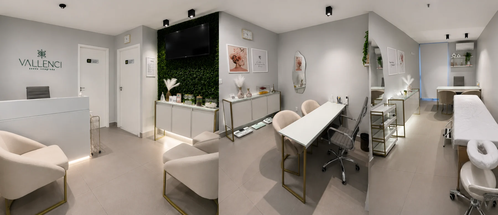

Plano personalizadoFeito para sua rotina
Nutrição sem extremismos
Conquiste o corpodos seus sonhossem restrições ouradicalismos.
Alcance seus objetivos sem passar fome ou recorrer a remédios milagrosos, com uma alimentação que não parece uma dieta.
Nutri. Anna WaleskaEsp. em Emagrecimento
BioimpedânciaAvaliação completa
Suporte próximoAcompanhamento contínuo
ComunidadeMotivação e acolhimento
Um método que cabe na sua vida
Como meu Método de Emagrecimento funciona?
Eu ouço sua história, identifico dificuldades e construo estratégias personalizadas com alimentos acessíveis. O objetivo é uma rotina prazerosa, possível e duradoura.
Você não precisa abandonar tudo o que gosta para alcançar seus resultados.
“Já imaginou alcançar seu objetivo sem abrir mão daquele docinho tão adorado?”Toque para saber mais
Resultados reais
Transformações de pacientes da Jornada
Deslize para o lado, use as setas ou toque na imagem para ampliar.
Resultados individuais variam conforme rotina, adesão e condições de saúde.
Para você que já tentou de tudo
Para quem é a Jornada de Emagrecimento?
Voltar a gostar do espelho
Recupere a confiança e sinta-se bem com o próprio corpo.
Sair do efeito sanfona
Construa consistência e resultados sustentáveis, sem culpa.
Chega de frustração
Supere tentativas que nunca respeitaram sua realidade.
Sem dietas milagrosas
Aprenda a comer bem sem viver presa a proibições.
Passo a passo
Como funciona a sua jornada
Um processo pensado para entender sua rotina, acompanhar sua evolução e tornar o resultado sustentável.
01
Pré-consulta
Questionário para reunir informações essenciais.
02
Consulta clínica
Avaliação da sua história, hábitos e objetivos.
03
Bioimpedância
Análise da composição corporal e medidas.

04
Planejamento alimentar
Plano com opções, substituições e receitas.

05
Comunidade
Motivação, troca de experiências e apoio.

06
Suporte da Nutri
Acompanhamento durante toda a jornada.
Quem vai caminhar com você
Quem é a Nutri Anna Waleska?
Anna Waleska convive com diabetes tipo 1 desde os 14 anos. Foi buscando compreender melhor o próprio corpo e sua alimentação que encontrou na Nutrição um novo caminho — e, ao longo dessa jornada, se apaixonou pelo universo do emagrecimento.
Há mais de 10 anos, transforma conhecimento técnico e experiência pessoal em um acompanhamento baseado em estratégia, empatia e acolhimento, ajudando mulheres a emagrecerem sem extremismos e respeitando suas rotinas.
Hoje, além de nutricionista, é fundadora da VALLENCI Saúde Integrada, clínica criada para ampliar esse propósito e transformar ainda mais vidas através de um cuidado próximo e humanizado.
Toque para saber maisAtendimento presencial
Um espaço preparado para acolher você
Consultório confortável e estruturado para uma avaliação próxima, cuidadosa e completa.
Toque para saber mais
Tire suas dúvidas
Perguntas frequentes
A consulta inclui avaliação da história clínica, hábitos, objetivos e construção conjunta de um plano personalizado.
Sim. O planejamento considera sua rotina, preferências, necessidades e objetivos.
Não. A proposta é construir equilíbrio e autonomia, sem radicalismos.
Você terá acompanhamento para dúvidas, ajustes e orientação durante toda a jornada.
Seu próximo passo começa agora
Pronta para transformar sua relação com a alimentação?
Converse com a Anna e descubra como começar.
Toque para saber mais
Avaliações no Google
Experiências reais de quem já viveu essa jornada
Conheça a opinião de pacientes que encontraram um acompanhamento próximo, estratégico e humanizado.
G
Google Reviews
Relatos de pacientes
Avaliações de pacientes reais
Experiências verificadas